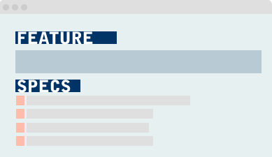
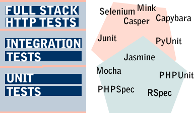
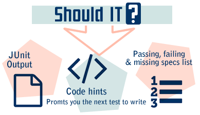

The programming language agnostic 'Behaviour Driven Development' framework.
Pain not included.
Github Repo. Get Started

Markdown is the perfect way to write technical documentation. Its simple yet expressive. Using a few simple rules you can write your feature files in a way that your tests can understand.

You can write tests in any framework you like in any language you like and even multiple languages. Feel free to test by hitting the webserver, through integration or unit tests. You choose!

The output from Should IT? Tells you what feature specs have passed, failed or not yet implemented. It can also run in a hint mode in various languages showing you how to write the test for that language.